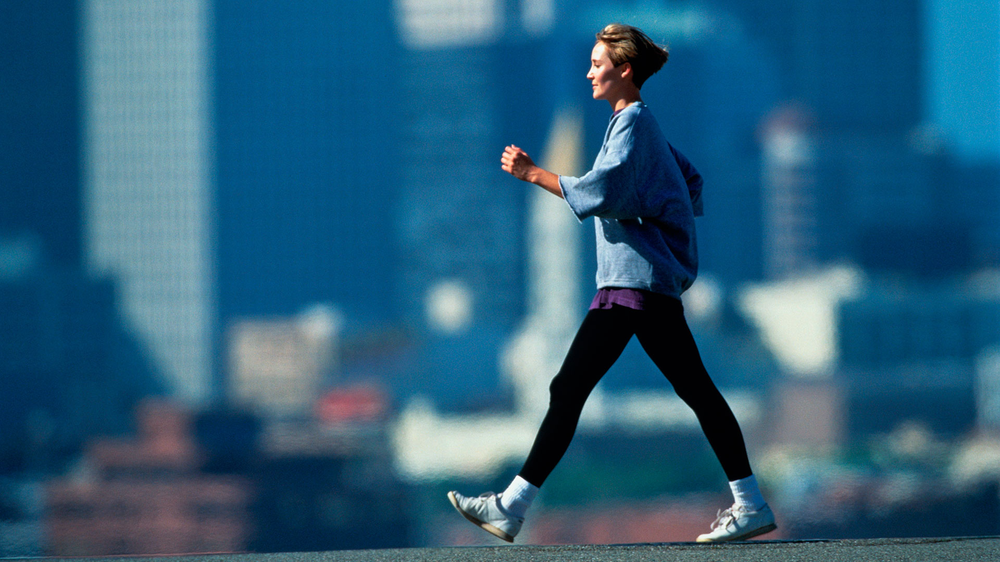
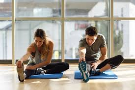
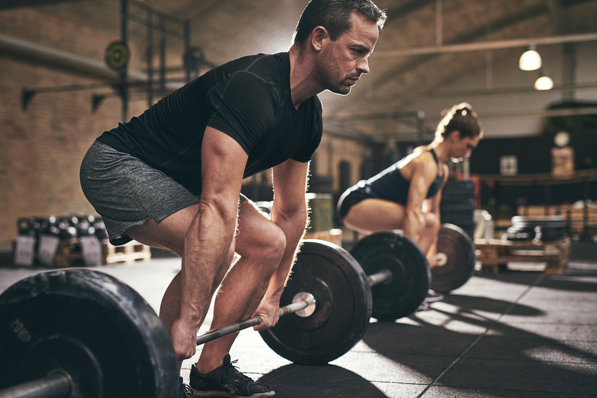
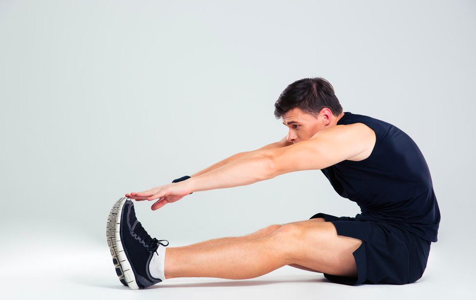

Caminar
Caminar es una excelente forma de ejercicio que se puede realizar en cualquier lugar y momento. Ayuda a mejorar la circulación, fortalecer los músculos y mantener un peso saludable. Intenta caminar al menos 30 minutos al día a un ritmo moderado.
- Elige un lugar seguro y agradable para caminar.
- Usa calzado cómodo y adecuado para caminar.
- Comienza con un calentamiento de 5 minutos de caminata lenta.
- Aumenta el ritmo gradualmente hasta alcanzar un ritmo moderado.
- Enfría caminando lentamente durante 5 minutos al final.
Ejercicios de Calentamiento
Los ejercicios de calentamiento son esenciales para preparar el cuerpo para la actividad física, aumentando la temperatura muscular y mejorando la flexibilidad. Un buen calentamiento puede prevenir lesiones y mejorar el rendimiento durante el ejercicio.
- Realiza una caminata ligera o trote en el lugar durante 5-10 minutos para aumentar la temperatura corporal.
- Realiza movimientos articulares, como rotaciones de hombros, caderas y tobillos, para preparar las articulaciones.
- Incorpora estiramientos dinámicos, como zancadas hacia adelante, para aumentar la flexibilidad.
- Realiza ejercicios de movilidad, como giros de tronco y balanceos de pierna, para mejorar el rango de movimiento.
- Termina con ejercicios específicos de tu actividad principal, como saltos suaves o movimientos similares a los del ejercicio principal.
Ejercicios de Fuerza
Los ejercicios de fuerza ayudan a construir y mantener la masa muscular. Esto es crucial para el metabolismo, la salud ósea y la capacidad funcional en la vida diaria. Puedes hacer ejercicios con pesas, bandas de resistencia o tu propio peso corporal.
- Selecciona un conjunto de pesas o bandas de resistencia.
- Realiza un calentamiento general de 5-10 minutos.
- Realiza ejercicios como sentadillas, flexiones, y levantamientos de pesas en series de 8-12 repeticiones.
- Descansa entre series durante 30-60 segundos.
- Enfría con estiramientos suaves al final del entrenamiento.
Ejercicios de Flexibilidad
La flexibilidad es importante para mantener un rango de movimiento saludable en las articulaciones. Esto puede prevenir lesiones y mejorar la postura. Yoga y estiramientos son formas efectivas de mejorar la flexibilidad.
- Realiza una sesión de calentamiento antes de estirar.
- Realiza estiramientos estáticos y dinámicos para todos los grupos musculares principales.
- Mantén cada estiramiento durante al menos 15-30 segundos.
- Evita rebotar durante los estiramientos para prevenir lesiones.
- Incorpora ejercicios de yoga para mejorar tanto la flexibilidad como la fuerza.